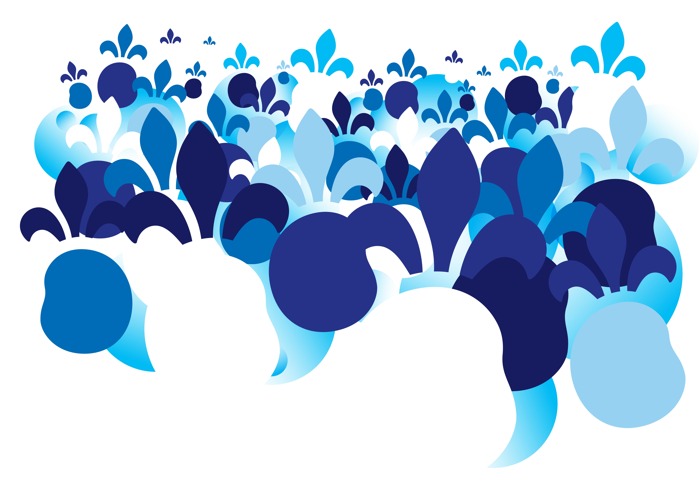

<!-- Google Fonts — chargé via <link> pour éviter le blocage du rendu CSS causé par @import -->
<link rel="preconnect" href="https://fonts.googleapis.com">
<link rel="preconnect" href="https://fonts.gstatic.com" crossorigin>
<link rel="stylesheet" href="https://fonts.googleapis.com/css2?family=Montserrat:ital,wght@0,400;0,700;0,800;0,900;1,400&display=swap">

<style>

  /* ── Variables ── */
  .fn-beloeil-2026 {
    --fn-navy:    #004f79;
    --fn-sky:     #00a1e1;
    --fn-sky-lt:  #e8f6fd;
    --fn-white:   #ffffff;
    --fn-ink:     #1a2b36;
    --fn-muted:   #4e636e;
    --fn-border:  rgba(0, 79, 121, 0.15);
    --fn-wine:    #7a2035;
    --fn-wine-lt: #f5e8eb;
    --fn-yellow:  #ffd025;
    --fn-width:   min(1120px, calc(100vw - 40px));

    color: var(--fn-ink);
    font-family: Montserrat, Gotham, Avenir, "Helvetica Neue", Arial, sans-serif;
    line-height: 1.5;
    background: var(--fn-white);
    overflow-x: hidden;
  }

  .fn-beloeil-2026 *,
  .fn-beloeil-2026 *::before,
  .fn-beloeil-2026 *::after { box-sizing: border-box; }

  .fn-beloeil-2026 a { color: inherit; }

  .fn-beloeil-2026 img {
    display: block;
    max-width: 100%;
  }

  .fn-beloeil-2026 h1,
  .fn-beloeil-2026 h2,
  .fn-beloeil-2026 h3,
  .fn-beloeil-2026 p { margin-top: 0; }

  /* ── Bouton CTA ── */
  .fn-beloeil-2026 .fn-btn-primary {
    display: inline-flex;
    align-items: center;
    gap: 10px;
    margin-top: 28px;
    padding: 0 36px;
    min-height: 58px;
    background: #c63872;
    color: #ffffff;
    font-weight: 900;
    font-size: 1.1rem;
    letter-spacing: 0.02em;
    text-decoration: none;
    box-shadow: 0 4px 24px rgba(198, 56, 114, 0.35);
    transition: background 180ms ease, transform 180ms ease, box-shadow 180ms ease;
  }

  .fn-beloeil-2026 .fn-btn-primary:hover,
  .fn-beloeil-2026 .fn-btn-primary:focus-visible {
    background: #a82e61;
    transform: translateY(-2px);
    box-shadow: 0 8px 32px rgba(198, 56, 114, 0.45);
  }

  /* ── Scroll indicator ── */
  .fn-beloeil-2026 .fn-scroll-hint {
    display: block;
    margin: 18px auto 0;
    width: 36px;
    color: var(--fn-navy);
    opacity: 0.45;
    animation: fn-bounce 2s ease-in-out infinite;
  }

  @keyframes fn-bounce {
    0%, 100% { transform: translateY(0); }
    50%       { transform: translateY(9px); }
  }

  /* ── Countdown ── */
  .fn-beloeil-2026 .fn-countdown {
    position: relative;
    background: linear-gradient(135deg, rgba(106,184,232,0.78) 0%, rgba(53,117,196,0.80) 42%, rgba(26,64,128,0.82) 100%);
    padding: clamp(44px, 7vw, 72px) 0;
    text-align: center;
    overflow: hidden;
  }

  .fn-beloeil-2026 .fn-countdown[hidden] { display: none; }

  .fn-beloeil-2026 .fn-countdown-units {
    display: flex;
    align-items: flex-start;
    justify-content: center;
    gap: clamp(5px, 1.2vw, 12px);
  }

  .fn-beloeil-2026 .fn-countdown-unit {
    display: flex;
    flex-direction: column;
    align-items: center;
    gap: 12px;
  }

  /* Jours séparé visuellement du reste */
  .fn-beloeil-2026 .fn-countdown-unit--days {
    margin-right: clamp(10px, 2.2vw, 24px);
  }

  .fn-beloeil-2026 .fn-countdown-digits {
    display: flex;
    gap: 5px;
  }

  .fn-beloeil-2026 .fn-countdown-digit {
    display: flex;
    align-items: center;
    justify-content: center;
    width: clamp(50px, 8.5vw, 86px);
    height: clamp(64px, 11vw, 108px);
    background: rgba(255,255,255,0.18);
    border: 1px solid rgba(255,255,255,0.26);
    backdrop-filter: blur(6px);
    -webkit-backdrop-filter: blur(6px);
    color: #091c3a;
    font-size: clamp(2rem, 5.2vw, 4.6rem);
    font-weight: 900;
    line-height: 1;
    border-radius: 14px;
    box-shadow:
      0 4px 24px rgba(0,0,0,0.22),
      inset 0 1px 0 rgba(255,255,255,0.42),
      inset 0 -1px 0 rgba(0,0,0,0.10);
  }

  .fn-beloeil-2026 .fn-countdown-unit-label {
    color: rgba(255,255,255,0.68);
    font-size: 0.64rem;
    font-weight: 900;
    letter-spacing: 0.18em;
    text-transform: uppercase;
  }

  .fn-beloeil-2026 .fn-countdown-sep {
    color: rgba(255,255,255,0.32);
    font-size: clamp(2rem, 5.2vw, 4.6rem);
    font-weight: 900;
    line-height: 1;
    padding-top: clamp(10px, 1.8vw, 20px);
    user-select: none;
  }

  /* Conteneur du dernier groupe (SECONDES + badge) */
  .fn-beloeil-2026 .fn-countdown-last-wrap {
    position: relative;
  }

  /* Les cartes de chiffres passent devant le badge */
  .fn-beloeil-2026 .fn-countdown-unit {
    position: relative;
    z-index: 1;
  }

  /* Badge circulaire — absolu, derrière les chiffres */
  .fn-beloeil-2026 .fn-countdown-badge {
    position: absolute;
    top: clamp(-38px, -4.5vw, -28px);
    right: clamp(-38px, -4.5vw, -28px);
    width: clamp(96px, 12vw, 130px);
    height: clamp(96px, 12vw, 130px);
    z-index: 0;
    opacity: 0.75;
    animation: fn-badge-spin 28s linear infinite;
    pointer-events: none;
  }

  @keyframes fn-badge-spin {
    from { transform: rotate(0deg); }
    to   { transform: rotate(360deg); }
  }

  @media (max-width: 640px) {
    .fn-beloeil-2026 .fn-countdown-badge { display: none; }
  }

  @media (max-width: 480px) {
    .fn-beloeil-2026 .fn-countdown-digit {
      width: 37px;
      height: 47px;
      font-size: 1.55rem;
      border-radius: 9px;
    }
    .fn-beloeil-2026 .fn-countdown-sep { font-size: 1.55rem; padding-top: 9px; }
    .fn-beloeil-2026 .fn-countdown-units { gap: 4px; }
    .fn-beloeil-2026 .fn-countdown-unit--days { margin-right: 7px; }
  }

  /* ── Layout helpers ── */
  .fn-beloeil-2026 .fn-full {
    width: 100vw;
    margin-right: calc(50% - 50vw);
    margin-left:  calc(50% - 50vw);
  }

  .fn-beloeil-2026 .fn-wrap {
    width: var(--fn-width);
    margin: 0 auto;
  }

  /* ═══════════════════════════════════════
     HERO
  ═══════════════════════════════════════ */
  .fn-beloeil-2026 .fn-hero {
    position: relative;
    background:
      url('../assets/images/identite-visuelle-qc/textures/FN26_Fond_1920x1080.png')
      center / cover no-repeat,
      #8dd9f5;
    overflow: hidden;
    padding: clamp(20px, 3vw, 36px) 0 0;
    text-align: center;
  }

  .fn-beloeil-2026 .fn-hero-inner {
    position: relative;
    z-index: 1;
    width: var(--fn-width);
    margin: 0 auto;
    padding-bottom: clamp(12px, 2vw, 24px);
  }

  /* Logo officiel Fête nationale du Québec */
  .fn-beloeil-2026 .fn-official-logo {
    display: block;
    width: clamp(240px, 34vw, 440px);
    margin: 0 auto 20px;
  }

  /* h1 accessible (sr-only) — le logo officiel assure la représentation visuelle */
  .fn-beloeil-2026 h1 {
    position: absolute;
    width: 1px; height: 1px;
    padding: 0; margin: -1px;
    overflow: hidden;
    clip: rect(0,0,0,0);
    white-space: nowrap;
    border: 0;
  }

  .fn-beloeil-2026 .fn-kicker {
    display: inline-block;
    margin-bottom: 22px;
    padding: 10px 24px;
    background: var(--fn-sky-lt);
    color: var(--fn-sky);
    font-size: 1.1rem;
    font-weight: 800;
    letter-spacing: 0.12em;
    text-transform: uppercase;
  }

  .fn-beloeil-2026 .fn-hero-sub {
    max-width: 640px;
    margin: 20px auto 0;
    color: var(--fn-navy);
    font-size: clamp(1.1rem, 2.2vw, 1.4rem);
    opacity: 0.78;
  }

  /* ── Styles programme (texte intro + tip maillots) ── */
  .fn-beloeil-2026 .fn-programme-lead {
    color: rgba(26,74,150,0.85);
    font-size: clamp(1rem, 1.6vw, 1.15rem);
    max-width: 640px;
    margin-bottom: clamp(28px, 4vw, 44px);
  }

  .fn-beloeil-2026 .fn-day-tip {
    margin-top: 18px;
    padding: 12px 16px;
    background: rgba(255, 208, 37, 0.18);
    border-left: 3px solid #c63872;
    color: #1a4a96;
    font-size: 0.9rem;
    font-weight: 700;
    line-height: 1.4;
  }

  /* Texture officielle bas du hero */
  .fn-beloeil-2026 .fn-hero-texture {
    position: relative;
    z-index: 1;
    line-height: 0;
    margin-top: clamp(16px, 3vw, 32px);
  }

  .fn-beloeil-2026 .fn-hero-texture img {
    display: block;
    width: 100%;
    max-height: 160px;
    object-fit: cover;
    object-position: top center;
  }

  .fn-beloeil-2026 .fn-kicker {
    display: inline-block;
    margin-bottom: 20px;
    padding: 6px 16px;
    background: var(--fn-sky-lt);
    color: var(--fn-sky);
    font-size: 0.80rem;
    font-weight: 800;
    letter-spacing: 0.10em;
    text-transform: uppercase;
  }

  /* Kicker variant on blue hero background */
  .fn-beloeil-2026 .fn-hero .fn-kicker {
    background: rgba(255, 255, 255, 0.9);
    color: var(--fn-navy);
  }

  /* ═══════════════════════════════════════
     WAVE DIVIDER (SVG inline via bg)
  ═══════════════════════════════════════ */
  .fn-beloeil-2026 .fn-wave {
    display: block;
    width: 100%;
    line-height: 0;
    overflow: hidden;
  }

  .fn-beloeil-2026 .fn-wave svg {
    display: block;
    width: 100%;
  }

  /* ═══════════════════════════════════════
     SECTIONS
  ═══════════════════════════════════════ */
  .fn-beloeil-2026 .fn-section {
    padding: clamp(52px, 8vw, 96px) 0;
  }

  .fn-beloeil-2026 .fn-section-sky {
    background: var(--fn-sky-lt);
  }

  .fn-beloeil-2026 h2 {
    color: var(--fn-navy);
    font-size: clamp(1.9rem, 4.5vw, 3.8rem);
    font-weight: 900;
    line-height: 0.96;
    margin-bottom: 24px;
  }

  .fn-beloeil-2026 h3 {
    color: var(--fn-navy);
    font-size: clamp(1.15rem, 2vw, 1.6rem);
    font-weight: 800;
    line-height: 1.1;
    margin-bottom: 10px;
  }

  .fn-beloeil-2026 p {
    color: var(--fn-muted);
    font-size: 1.05rem;
  }

  /* ═══════════════════════════════════════
     INTRO FACTS
  ═══════════════════════════════════════ */
  .fn-beloeil-2026 .fn-intro {
    display: grid;
    grid-template-columns: minmax(0, 0.95fr) minmax(0, 1.05fr);
    gap: clamp(28px, 6vw, 72px);
    align-items: start;
  }

  .fn-beloeil-2026 .fn-lead {
    color: var(--fn-navy);
    font-size: clamp(1.3rem, 2.8vw, 2.2rem);
    font-weight: 900;
    line-height: 1.1;
    margin-bottom: 0;
  }

  .fn-beloeil-2026 .fn-facts { display: grid; gap: 0; }

  .fn-beloeil-2026 .fn-fact {
    display: grid;
    grid-template-columns: 120px 1fr;
    gap: 18px;
    padding: 16px 0;
    border-bottom: 1px solid var(--fn-border);
  }

  .fn-beloeil-2026 .fn-fact strong {
    color: var(--fn-sky);
    font-size: 0.80rem;
    font-weight: 900;
    letter-spacing: 0.08em;
    text-transform: uppercase;
  }

  .fn-beloeil-2026 .fn-fact span {
    color: var(--fn-ink);
    font-size: 1rem;
  }

  /* ═══════════════════════════════════════
     PROGRAMME — section sombre immersive
  ═══════════════════════════════════════ */
  .fn-beloeil-2026 .fn-programme-section {
    position: relative;
    padding: clamp(52px, 8vw, 96px) 0;
  }

  .fn-beloeil-2026 .fn-programme-section::before {
    content: "";
    position: absolute;
    inset: 0;
    background:
      url('../assets/images/identite-visuelle-qc/textures/FN26_Fond_1920x1080.png')
      center / cover no-repeat;
    transform: scaleY(-1);
    z-index: 0;
  }

  .fn-beloeil-2026 .fn-programme-section > * {
    position: relative;
    z-index: 1;
  }

  .fn-beloeil-2026 .fn-programme-section h2 {
    color: #1a4a96;
    margin-bottom: clamp(32px, 5vw, 56px);
  }

  .fn-beloeil-2026 .fn-program {
    display: grid;
    gap: 3px;
  }

  .fn-beloeil-2026 .fn-day {
    display: grid;
    grid-template-columns: minmax(0, 1fr) minmax(280px, 0.85fr);
    gap: 0;
    overflow: hidden;
    background: rgba(255,255,255,0.04);
    border-left: 4px solid rgba(255,255,255,0.08);
    transition: border-color 300ms ease, background 300ms ease;
  }

  .fn-beloeil-2026 .fn-day:hover {
    background: rgba(255,255,255,0.07);
    border-left-color: #c63872;
  }

  .fn-beloeil-2026 .fn-day-content {
    padding: clamp(26px, 4vw, 48px);
  }

  .fn-beloeil-2026 .fn-day-header {
    display: flex;
    align-items: baseline;
    flex-wrap: wrap;
    gap: 10px 20px;
    margin-bottom: 28px;
    padding-bottom: 20px;
    border-bottom: 1px solid rgba(255,255,255,0.15);
  }

  .fn-beloeil-2026 .fn-date {
    color: #c63872;
    font-size: clamp(2.8rem, 8vw, 6rem);
    font-weight: 900;
    line-height: 0.88;
  }

  .fn-beloeil-2026 .fn-place {
    color: var(--fn-sky);
    font-size: clamp(1rem, 2.2vw, 1.5rem);
    font-weight: 900;
  }

  .fn-beloeil-2026 .fn-hours-badge {
    display: inline-block;
    padding: 4px 12px;
    background: rgba(0,161,225,0.18);
    color: var(--fn-sky);
    font-size: 0.82rem;
    font-weight: 800;
    border: 1px solid rgba(0,161,225,0.35);
  }

  .fn-beloeil-2026 .fn-events { display: grid; gap: 18px; }

  .fn-beloeil-2026 .fn-event {
    display: grid;
    grid-template-columns: 110px 1fr;
    gap: 16px;
    align-items: start;
  }

  .fn-beloeil-2026 .fn-time {
    color: #c63872;
    font-size: 1.1rem;
    font-weight: 900;
  }

  .fn-beloeil-2026 .fn-event p {
    margin-bottom: 0;
    color: rgba(26,74,150,0.88);
    font-size: 1rem;
    line-height: 1.5;
  }

  .fn-beloeil-2026 .fn-event p strong {
    color: var(--fn-sky);
  }

  /* Day photo side */
  .fn-beloeil-2026 .fn-day-photo {
    position: relative;
    min-height: 260px;
    overflow: hidden;
    background: #041f30;
  }

  .fn-beloeil-2026 .fn-day-photo img {
    width: 100%;
    height: 100%;
    object-fit: cover;
    filter: brightness(0.85) saturate(0.9);
    transition: transform 500ms ease, filter 500ms ease;
  }

  /* Overlay dramatique */
  .fn-beloeil-2026 .fn-day-photo::after {
    content: "";
    position: absolute;
    inset: 0;
    background: linear-gradient(
      to right,
      rgba(8, 47, 70, 0.55) 0%,
      rgba(8, 47, 70, 0.10) 60%,
      transparent 100%
    );
    pointer-events: none;
  }

  .fn-beloeil-2026 .fn-day:hover .fn-day-photo img {
    transform: scale(1.04);
    filter: brightness(0.95) saturate(1.05);
  }

  /* ═══════════════════════════════════════
     ARTISTE — carte diagonale
  ═══════════════════════════════════════ */
  .fn-beloeil-2026 .fn-artist {
    display: grid;
    grid-template-columns: minmax(300px, 1fr) minmax(0, 1fr);
    gap: 0;
    overflow: hidden;
    min-height: 440px;
  }

  /* Photo — coupe diagonale sur le bord droit */
  .fn-beloeil-2026 .fn-artist-photo {
    position: relative;
    overflow: hidden;
    clip-path: polygon(0 0, 100% 0, 88% 100%, 0 100%);
    /* On compense le clip en élargissant la colonne légèrement */
    margin-right: -6%;
    z-index: 1;
  }

  .fn-beloeil-2026 .fn-artist-photo img {
    width: 100%;
    height: 100%;
    object-fit: cover;
    object-position: center top;
    transition: transform 600ms ease, filter 600ms ease;
  }

  .fn-beloeil-2026 .fn-artist:hover .fn-artist-photo img {
    transform: scale(1.05);
    filter: saturate(1.08);
  }

  /* Panneau texte — fond bleu nuit (cohérent avec la page) + décor fleur de lys */
  .fn-beloeil-2026 .fn-artist-content {
    position: relative;
    padding: clamp(36px, 6vw, 64px) clamp(30px, 5vw, 56px) clamp(36px, 6vw, 64px) clamp(48px, 7vw, 80px);
    background: var(--fn-navy);
    color: var(--fn-white);
    display: flex;
    flex-direction: column;
    justify-content: center;
    overflow: hidden;
  }

  /* Fleur de lys décorative en filigrane dans le fond */
  .fn-beloeil-2026 .fn-artist-content::before {
    content: "⚜";
    position: absolute;
    bottom: -0.18em;
    right: -0.06em;
    font-size: clamp(160px, 22vw, 280px);
    font-family: serif, Georgia;
    color: rgba(255,255,255,0.06);
    line-height: 1;
    pointer-events: none;
    user-select: none;
  }

  /* Trait d'accent bleu ciel */
  .fn-beloeil-2026 .fn-artist-content::after {
    content: "";
    position: absolute;
    top: 0;
    left: 0;
    width: 5px;
    height: 100%;
    background: var(--fn-sky);
  }

  .fn-beloeil-2026 .fn-eyebrow {
    display: inline-flex;
    align-items: center;
    gap: 8px;
    margin-bottom: 16px;
    color: var(--fn-sky);
    font-size: 0.76rem;
    font-weight: 900;
    letter-spacing: 0.14em;
    text-transform: uppercase;
    position: relative;
    z-index: 1;
  }

  .fn-beloeil-2026 .fn-eyebrow::before {
    content: "";
    display: inline-block;
    width: 28px;
    height: 2px;
    background: var(--fn-sky);
    flex-shrink: 0;
  }

  .fn-beloeil-2026 .fn-artist-content h2 {
    color: var(--fn-white);
    font-size: clamp(2.4rem, 5vw, 4.4rem);
    font-weight: 900;
    line-height: 0.9;
    margin-bottom: 14px;
    position: relative;
    z-index: 1;
  }

  .fn-beloeil-2026 .fn-artist-subtitle {
    color: var(--fn-sky);
    font-size: 1rem;
    font-style: italic;
    font-weight: 700;
    margin-bottom: 18px;
    position: relative;
    z-index: 1;
  }

  .fn-beloeil-2026 .fn-artist-content > p:not(.fn-artist-subtitle) {
    color: rgba(255,255,255,0.78);
    font-size: 1rem;
    line-height: 1.6;
    max-width: 42ch;
    margin-bottom: 0;
    position: relative;
    z-index: 1;
  }

  @media (max-width: 820px) {
    .fn-beloeil-2026 .fn-artist {
      grid-template-columns: 1fr;
    }

    .fn-beloeil-2026 .fn-artist-photo {
      clip-path: polygon(0 0, 100% 0, 100% 88%, 0 100%);
      margin-right: 0;
      margin-bottom: -6%;
      min-height: 280px;
    }

    .fn-beloeil-2026 .fn-artist-content::after {
      top: 0; left: 0;
      width: 100%; height: 5px;
    }
  }

  /* ═══════════════════════════════════════
     GALERIE
  ═══════════════════════════════════════ */
  .fn-beloeil-2026 .fn-gallery-header {
    margin-bottom: clamp(28px, 4vw, 48px);
  }

  .fn-beloeil-2026 .fn-gallery {
    display: grid;
    grid-template-columns: repeat(3, 1fr);
    grid-template-rows: 260px 260px;
    gap: 8px;
  }

  .fn-beloeil-2026 .fn-gallery-item {
    overflow: hidden;
    background: var(--fn-sky-lt);
  }

  .fn-beloeil-2026 .fn-gallery-item img {
    width: 100%;
    height: 100%;
    object-fit: cover;
    transition: transform 500ms ease, filter 400ms ease;
  }

  .fn-beloeil-2026 .fn-gallery-item:hover img {
    transform: scale(1.06);
    filter: brightness(1.06) saturate(1.1);
  }

  /* Tall item spans 2 rows */
  .fn-beloeil-2026 .fn-gallery-tall {
    grid-row: span 2;
  }

  /* Wide item spans 2 columns */
  .fn-beloeil-2026 .fn-gallery-wide {
    grid-column: span 2;
  }

  @media (max-width: 820px) {
    .fn-beloeil-2026 .fn-gallery {
      grid-template-columns: repeat(2, 1fr);
      grid-template-rows: auto;
    }

    .fn-beloeil-2026 .fn-gallery-tall,
    .fn-beloeil-2026 .fn-gallery-wide {
      grid-row: unset;
      grid-column: unset;
    }

    .fn-beloeil-2026 .fn-gallery-item {
      aspect-ratio: 4 / 3;
    }
  }

  @media (max-width: 560px) {
    .fn-beloeil-2026 .fn-gallery {
      grid-template-columns: 1fr;
    }
  }

  /* ═══════════════════════════════════════
     INFOS PRATIQUES
  ═══════════════════════════════════════ */
  .fn-beloeil-2026 .fn-practical {
    display: grid;
    grid-template-columns: repeat(3, minmax(0, 1fr));
    gap: 1px;
    background: var(--fn-border);
    border: 1px solid var(--fn-border);
  }

  .fn-beloeil-2026 .fn-practical-item {
    padding: clamp(24px, 4vw, 38px);
    background: var(--fn-white);
  }

  .fn-beloeil-2026 .fn-practical-icon {
    display: block;
    width: 40px;
    height: 4px;
    background: var(--fn-sky);
    margin-bottom: 20px;
  }

  .fn-beloeil-2026 .fn-practical-item h3 {
    color: var(--fn-navy);
    font-size: clamp(1.1rem, 2vw, 1.5rem);
    margin-bottom: 10px;
  }

  /* ═══════════════════════════════════════
     PARTENAIRES
  ═══════════════════════════════════════ */
  .fn-beloeil-2026 .fn-partners-intro {
    text-align: center;
    margin-bottom: clamp(32px, 5vw, 56px);
  }

  .fn-beloeil-2026 .fn-partners-intro h2 {
    margin: 0 auto 10px;
  }

  .fn-beloeil-2026 .fn-partners-intro p {
    max-width: 520px;
    margin: 0 auto;
  }

  .fn-beloeil-2026 .fn-logo-row {
    display: flex;
    flex-wrap: wrap;
    align-items: center;
    justify-content: center;
    gap: 28px 40px;
    margin-bottom: 32px;
  }

  .fn-beloeil-2026 .fn-logo-row img {
    display: block;
    object-fit: contain;
    filter: grayscale(0.2);
    opacity: 0.85;
    transition: filter 180ms ease, opacity 180ms ease, transform 180ms ease;
  }

  .fn-beloeil-2026 .fn-logo-row img:hover {
    filter: grayscale(0);
    opacity: 1;
    transform: translateY(-2px);
  }

  .fn-beloeil-2026 .fn-logo-lg { height: 60px; }
  .fn-beloeil-2026 .fn-logo-md { height: 46px; }
  .fn-beloeil-2026 .fn-logo-sm { height: 36px; }

  .fn-beloeil-2026 .fn-partner-list {
    display: flex;
    flex-wrap: wrap;
    justify-content: center;
    gap: 6px 24px;
    margin: 0;
    padding: 0;
    list-style: none;
    border-top: 1px solid var(--fn-border);
    padding-top: 24px;
  }

  .fn-beloeil-2026 .fn-partner-list li {
    color: var(--fn-muted);
    font-size: 0.9rem;
  }

  /* ═══════════════════════════════════════
     FOOTER — cohérent avec section programme
  ═══════════════════════════════════════ */
  .fn-beloeil-2026 .fn-footer-cta {
    display: flex;
    align-items: center;
    justify-content: center;
    min-height: 200px;
    text-align: center;
    background:
      url('../assets/images/identite-visuelle-qc/textures/FN26_Fond_1920x1080.png')
      center / cover no-repeat,
      #8dd9f5;
    overflow: hidden;
  }

  .fn-beloeil-2026 .fn-footer-cta .fn-wrap {
    padding: clamp(32px, 5vw, 56px) 0;
  }

  .fn-beloeil-2026 .fn-footer-cta h2 {
    color: var(--fn-navy);
    font-size: clamp(1.8rem, 4.5vw, 3.4rem);
    margin-bottom: 12px;
  }

  .fn-beloeil-2026 .fn-footer-cta p {
    color: var(--fn-navy);
    opacity: 0.72;
    max-width: 480px;
    margin: 0 auto;
    font-size: 1.05rem;
  }

  .fn-beloeil-2026 .fn-footer-texture {
    line-height: 0;
    flex-shrink: 0;
  }

  .fn-beloeil-2026 .fn-footer-texture img {
    display: block;
    width: 100%;
    height: 110px;
    object-fit: contain;
    object-position: bottom center;
  }

  /* ═══════════════════════════════════════
     REVEAL ANIMATIONS
  ═══════════════════════════════════════ */
  .fn-beloeil-2026 .fn-reveal { opacity: 1; transform: none; }

  .fn-beloeil-2026.has-js .fn-reveal {
    opacity: 0;
    transform: translateY(24px);
    transition: opacity 640ms ease, transform 640ms ease;
  }

  .fn-beloeil-2026.has-js .fn-reveal.fn-visible {
    opacity: 1;
    transform: none;
  }

  /* ═══════════════════════════════════════
     REDUCED MOTION
  ═══════════════════════════════════════ */
  @media (prefers-reduced-motion: reduce) {
    .fn-beloeil-2026 *, .fn-beloeil-2026 *::before, .fn-beloeil-2026 *::after {
      animation-duration: 1ms !important;
      transition-duration: 1ms !important;
    }
  }

  /* ═══════════════════════════════════════
     CARTES DE JOURNÉE (intro)
  ═══════════════════════════════════════ */
  .fn-beloeil-2026 .fn-day-cards {
    display: grid;
    grid-template-columns: 1fr 1fr;
    gap: 20px;
    margin-top: clamp(28px, 4vw, 48px);
  }

  .fn-beloeil-2026 .fn-day-card {
    background: var(--fn-white);
    border: 1px solid var(--fn-border);
    overflow: hidden;
  }

  .fn-beloeil-2026 .fn-day-card-head {
    display: flex;
    align-items: center;
    gap: 16px;
    padding: 18px 24px;
    background: var(--fn-navy);
    color: var(--fn-white);
  }

  .fn-beloeil-2026 .fn-day-card-num {
    font-size: clamp(2.8rem, 5vw, 4rem);
    font-weight: 900;
    line-height: 1;
    color: var(--fn-yellow);
  }

  .fn-beloeil-2026 .fn-day-card-meta {
    display: flex;
    flex-direction: column;
    gap: 4px;
  }

  .fn-beloeil-2026 .fn-day-card-month {
    font-size: 1rem;
    font-weight: 800;
    color: rgba(255,255,255,0.9);
    text-transform: uppercase;
    letter-spacing: 0.06em;
  }

  .fn-beloeil-2026 .fn-day-card-hours {
    display: inline-block;
    padding: 3px 10px;
    background: rgba(255,255,255,0.15);
    color: var(--fn-yellow);
    font-size: 0.80rem;
    font-weight: 800;
    border-radius: 2px;
    width: fit-content;
  }

  .fn-beloeil-2026 .fn-day-card-body {
    padding: 20px 24px;
  }

  .fn-beloeil-2026 .fn-day-card-location {
    display: flex;
    align-items: center;
    gap: 7px;
    margin-bottom: 14px;
    color: var(--fn-sky);
    font-size: 1rem;
    font-weight: 800;
  }

  .fn-beloeil-2026 .fn-day-card-location svg {
    flex-shrink: 0;
    width: 16px;
    height: 16px;
  }

  .fn-beloeil-2026 .fn-day-card-list {
    margin: 0 0 0 0;
    padding: 0;
    list-style: none;
    display: grid;
    gap: 8px;
  }

  .fn-beloeil-2026 .fn-day-card-list li {
    display: flex;
    align-items: flex-start;
    gap: 8px;
    color: var(--fn-ink);
    font-size: 0.95rem;
    line-height: 1.4;
  }

  .fn-beloeil-2026 .fn-day-card-list li::before {
    content: "";
    display: block;
    width: 6px;
    height: 6px;
    border-radius: 50%;
    background: var(--fn-sky);
    margin-top: 0.45em;
    flex-shrink: 0;
  }

  .fn-beloeil-2026 .fn-day-card-tip {
    display: flex;
    align-items: flex-start;
    gap: 10px;
    margin-top: 16px;
    padding: 12px 14px;
    background: #fff8e1;
    border-left: 3px solid var(--fn-yellow);
    color: #5a4200;
    font-size: 0.88rem;
    font-weight: 700;
    line-height: 1.4;
  }

  /* ═══════════════════════════════════════
     RESPONSIVE — 820px (tablette)
  ═══════════════════════════════════════ */
  @media (max-width: 820px) {
    /* Sections */
    .fn-beloeil-2026 .fn-section { padding: clamp(36px, 6vw, 64px) 0; }

    /* Programme */
    .fn-beloeil-2026 .fn-programme-section { padding: clamp(36px, 6vw, 64px) 0; }
    .fn-beloeil-2026 .fn-day { grid-template-columns: 1fr; border-left-width: 0; border-top: 4px solid rgba(255,255,255,0.08); }
    .fn-beloeil-2026 .fn-day-photo {
      order: -1;
      min-height: 0;
      max-height: 260px;
      height: 260px;
    }
    .fn-beloeil-2026 .fn-day-content { padding: clamp(18px, 4vw, 28px); }

    /* Artiste */
    .fn-beloeil-2026 .fn-artist { grid-template-columns: 1fr; }
    .fn-beloeil-2026 .fn-artist-photo {
      clip-path: none;
      margin-right: 0;
      min-height: 0;
      max-height: 300px;
      height: 300px;
    }
    .fn-beloeil-2026 .fn-artist-content::after {
      width: 100%; height: 5px;
      top: 0; right: unset;
    }
    .fn-beloeil-2026 .fn-artist-content::before { font-size: 200px; }

    /* Infos pratiques */
    .fn-beloeil-2026 .fn-practical { grid-template-columns: 1fr; }

    /* Galerie */
    .fn-beloeil-2026 .fn-gallery {
      grid-template-columns: repeat(2, 1fr);
      grid-template-rows: auto;
    }
    .fn-beloeil-2026 .fn-gallery-tall,
    .fn-beloeil-2026 .fn-gallery-wide { grid-row: unset; grid-column: unset; }
    .fn-beloeil-2026 .fn-gallery-item { aspect-ratio: 4 / 3; height: auto; }

    /* Partenaires */
    .fn-beloeil-2026 .fn-logo-row { gap: 18px 28px; }
  }

  /* ═══════════════════════════════════════
     RESPONSIVE — 640px (cartes de journée)
  ═══════════════════════════════════════ */
  @media (max-width: 640px) {
    .fn-beloeil-2026 .fn-day-cards { grid-template-columns: 1fr; }
  }

  /* ═══════════════════════════════════════
     RESPONSIVE — 480px (mobile)
  ═══════════════════════════════════════ */
  @media (max-width: 480px) {
    .fn-beloeil-2026 { --fn-width: min(100% - 24px, 1120px); }

    /* Empêcher débordement horizontal */
    .fn-beloeil-2026 .fn-full {
      width: 100%;
      margin-right: 0;
      margin-left: 0;
    }

    /* Sections */
    .fn-beloeil-2026 .fn-section { padding: 32px 0; }

    /* Hero */
    .fn-beloeil-2026 .fn-hero { padding-top: 40px; }
    .fn-beloeil-2026 .fn-hero-inner { padding-bottom: 60px; }
    .fn-beloeil-2026 .fn-fleur-icon { font-size: 40px; margin-bottom: 12px; }

    /* Titres */
    .fn-beloeil-2026 h2 { font-size: clamp(1.6rem, 7vw, 2.4rem); }
    .fn-beloeil-2026 h3 { font-size: 1.1rem; }

    /* Hero */
    .fn-beloeil-2026 .fn-official-logo { width: clamp(160px, 50vw, 220px); }

    /* Programme */
    .fn-beloeil-2026 .fn-day-photo { max-height: 200px; height: 200px; }
    .fn-beloeil-2026 .fn-event { grid-template-columns: 1fr; gap: 3px; }
    .fn-beloeil-2026 .fn-time { font-size: 0.9rem; }

    /* Cartes de journée */
    .fn-beloeil-2026 .fn-day-card-num { font-size: 2.2rem; }
    .fn-beloeil-2026 .fn-day-card-body { padding: 16px; }
    .fn-beloeil-2026 .fn-day-card-head { padding: 14px 16px; }

    /* Artiste */
    .fn-beloeil-2026 .fn-artist-photo { max-height: 240px; height: 240px; }
    .fn-beloeil-2026 .fn-artist-content { padding: 24px 20px; }
    .fn-beloeil-2026 .fn-artist-content::before { font-size: 140px; }

    /* Galerie — 1 colonne */
    .fn-beloeil-2026 .fn-gallery { grid-template-columns: 1fr; gap: 6px; }
    .fn-beloeil-2026 .fn-gallery-item { aspect-ratio: 16 / 9; }

    /* Partenaires */
    .fn-beloeil-2026 .fn-logo-row { gap: 14px 20px; }
    .fn-beloeil-2026 .fn-logo-lg { height: 38px; }
    .fn-beloeil-2026 .fn-partner-list { flex-direction: column; align-items: center; }

    /* Footer */
    .fn-beloeil-2026 .fn-footer-cta { padding: 40px 0 32px; }
    .fn-beloeil-2026 .fn-footer-cta::before { height: 120px; background-size: auto 120px; }
  }
</style>

<section class="fn-beloeil-2026" aria-labelledby="fn-title">
  <!-- WordPress : remplacer les chemins ../assets/... par les URLs de la médiathèque. -->

  <!-- ═══ HERO ═══ -->
  <div class="fn-hero fn-full">

    <div class="fn-hero-inner">
      <!-- Logo officiel Fête nationale du Québec 2026 -->
      

      <p class="fn-kicker">Beloeil · 23 et 24 juin 2026</p>

      <h1 id="fn-title">
        Fête nationale
        <em>à Beloeil</em>
      </h1>

      <p class="fn-hero-sub">
        Deux jours de festivités au Vieux-Beloeil et au parc du Petit-Rapide :
        animations, activités familiales, feux d'artifice et spectacle de
        Joyeux Calvaire en hommage aux Cowboys Fringants.
      </p>

      <!-- CTA principal -->
      <a href="#fn-programmation" class="fn-btn-primary">
        Voir la programmation
        <svg width="16" height="16" viewBox="0 0 16 16" fill="currentColor" aria-hidden="true">
          <path d="M8 12L2 6l1.4-1.4L8 9.2l4.6-4.6L14 6z"/>
        </svg>
      </a>

      <!-- Scroll indicator -->
      <svg class="fn-scroll-hint" aria-hidden="true" viewBox="0 0 36 36" fill="none" xmlns="http://www.w3.org/2000/svg">
        <circle cx="18" cy="18" r="17" stroke="currentColor" stroke-width="1.5" opacity="0.4"/>
        <path d="M12 16l6 6 6-6" stroke="currentColor" stroke-width="2" stroke-linecap="round" stroke-linejoin="round"/>
      </svg>
    </div>

    <!-- Texture officielle Fête nationale — fleurs de lys et bulles -->
    <div class="fn-hero-texture" aria-hidden="true">
      
    </div>

  </div>

  <!-- ═══ COUNTDOWN ═══ -->
  <div class="fn-countdown fn-full" id="fn-countdown-bar" aria-live="polite">
    <div class="fn-wrap">
      <div class="fn-countdown-units">

        <!-- Jours — séparé visuellement (pas de deux-points) -->
        <div class="fn-countdown-unit fn-countdown-unit--days">
          <div class="fn-countdown-digits">
            <span class="fn-countdown-digit" id="fn-days-tens">0</span>
            <span class="fn-countdown-digit" id="fn-days-ones">0</span>
          </div>
          <span class="fn-countdown-unit-label">Jours</span>
        </div>

        <div class="fn-countdown-unit">
          <div class="fn-countdown-digits">
            <span class="fn-countdown-digit" id="fn-hours-tens">0</span>
            <span class="fn-countdown-digit" id="fn-hours-ones">0</span>
          </div>
          <span class="fn-countdown-unit-label">Heures</span>
        </div>

        <span class="fn-countdown-sep" aria-hidden="true">:</span>

        <div class="fn-countdown-unit">
          <div class="fn-countdown-digits">
            <span class="fn-countdown-digit" id="fn-minutes-tens">0</span>
            <span class="fn-countdown-digit" id="fn-minutes-ones">0</span>
          </div>
          <span class="fn-countdown-unit-label">Minutes</span>
        </div>

        <span class="fn-countdown-sep" aria-hidden="true">:</span>

        <!-- Dernier groupe : SECONDES + badge derrière -->
        <div class="fn-countdown-last-wrap">
          <div class="fn-countdown-unit">
            <div class="fn-countdown-digits">
              <span class="fn-countdown-digit" id="fn-seconds-tens">0</span>
              <span class="fn-countdown-digit" id="fn-seconds-ones">0</span>
            </div>
            <span class="fn-countdown-unit-label">Secondes</span>
          </div>

          <!-- Badge circulaire — derrière les chiffres via z-index -->
          <svg class="fn-countdown-badge" aria-hidden="true" viewBox="0 0 150 150" xmlns="http://www.w3.org/2000/svg">
            <defs>
              <!-- Cercle horaire partant du sommet (12h) -->
              <path id="fn-badge-path"
                d="M 75,20
                   A 55,55 0 0,1 130,75
                   A 55,55 0 0,1 75,130
                   A 55,55 0 0,1 20,75
                   A 55,55 0 0,1 75,20"/>
            </defs>
            <text font-size="10" font-weight="900" letter-spacing="7" fill="white" font-family="Montserrat,sans-serif">
              <textPath href="#fn-badge-path">ON COMPTE LES JOURS · </textPath>
            </text>
          </svg>
        </div>

      </div>
    </div>
  </div>

  <!-- ═══ PROGRAMME ═══ -->
  <div id="fn-programmation" class="fn-programme-section fn-full">
    <div class="fn-wrap">
      <p class="fn-programme-lead fn-reveal">
        Un rendez-vous rassembleur pour célébrer la culture québécoise, la musique
        et les moments en famille au cœur de Beloeil.
      </p>
      <h2 class="fn-reveal">Programmation</h2>
      <div class="fn-program">

        <!-- 23 juin -->
        <div class="fn-day fn-reveal">
          <div class="fn-day-content">
            <div class="fn-day-header">
              <div class="fn-date">23 juin</div>
              <span class="fn-place">Vieux-Beloeil</span>
              <span class="fn-hours-badge">20 h à 23 h</span>
            </div>
            <div class="fn-events">
              <div class="fn-event">
                <strong class="fn-time">20 h</strong>
                <p>Animations de rue et musique d'ambiance.</p>
              </div>
              <div class="fn-event">
                <strong class="fn-time">22 h</strong>
                <p>Feux d'artifice en partenariat avec la Ville de Mont-Saint-Hilaire.</p>
              </div>
            </div>
          </div>
          <div class="fn-day-photo">
            <!-- WordPress : remplacer par une photo de feux d'artifice lorsque disponible -->
            
          </div>
        </div>

        <!-- 24 juin -->
        <div class="fn-day fn-reveal">
          <div class="fn-day-content">
            <div class="fn-day-header">
              <div class="fn-date">24 juin</div>
              <span class="fn-place">parc du Petit-Rapide</span>
              <span class="fn-hours-badge">14 h à 19 h</span>
            </div>
            <div class="fn-events">
              <div class="fn-event">
                <strong class="fn-time">14 h à 19 h</strong>
                <p>
                  Mur d'escalade, trampolines,
                  <strong>jeux gonflables d'eau et plage de mousse&nbsp;!</strong>
                  Jeux, animations, organismes, ateliers culturels et maquillage.
                </p>
              </div>
              <div class="fn-event">
                <strong class="fn-time">17 h</strong>
                <p>Discours patriotique et spectacle de Joyeux Calvaire.</p>
              </div>
            </div>
            <div class="fn-day-tip">
              👕 Apportez vos maillots ou vêtements de rechange — activités d'eau prévues !
            </div>
          </div>
          <div class="fn-day-photo">
            
          </div>
        </div>

      </div>
    </div>
  </div>

  <!-- ═══ ARTISTE ═══ -->
  <div class="fn-section">
    <div class="fn-wrap fn-reveal">
      <div class="fn-artist">
        <div class="fn-artist-photo">
          
        </div>
        <div class="fn-artist-content">
          <span class="fn-eyebrow">Spectacle vedette — 24 juin, 17 h</span>
          <h2>Joyeux<br>Calvaire</h2>
          <p class="fn-artist-subtitle">Hommage aux Cowboys Fringants</p>
          <p>
            Un hommage festif à l'un des groupes emblématiques du Québec,
            avec l'énergie d'un grand rassemblement populaire.
            Le spectacle suivra le discours patriotique au parc du Petit-Rapide.
          </p>
        </div>
      </div>
    </div>
  </div>

  <!-- ═══ INFOS PRATIQUES ═══ -->
  <div class="fn-section">
    <div class="fn-wrap">
      <h2 class="fn-reveal">Infos pratiques</h2>
      <div class="fn-practical fn-reveal">
        <div class="fn-practical-item">
          <span class="fn-practical-icon"></span>
          <h3>Activités d'eau</h3>
          <p>Des jeux gonflables d'eau et une plage de mousse sont prévus le 24 juin. Apportez vos maillots ou vêtements de rechange.</p>
        </div>
        <div class="fn-practical-item">
          <span class="fn-practical-icon"></span>
          <h3>Sur place</h3>
          <p>Des kiosques alimentaires et des rafraîchissements seront disponibles pendant l'événement.</p>
        </div>
        <div class="fn-practical-item">
          <span class="fn-practical-icon"></span>
          <h3>Activités familiales</h3>
          <p>Mur d'escalade, trampolines, ateliers culturels, maquillage et animations pour tous les âges — une journée complète en famille.</p>
        </div>
      </div>
    </div>
  </div>

  <!-- ═══ GALERIE — ambiance des années précédentes ═══ -->
  <div class="fn-section fn-full">
    <div class="fn-wrap">
      <div class="fn-gallery-header fn-reveal">
        <p class="fn-kicker" style="background:none; padding:0;">Coup d'œil sur les années précédentes</p>
        <h2>L'ambiance en images</h2>
        <p style="max-width: 560px;">Des moments forts qui donnent le ton pour cette nouvelle édition.</p>
      </div>
      <div class="fn-gallery fn-reveal">
        <div class="fn-gallery-item fn-gallery-tall">
          
        </div>
        <div class="fn-gallery-item">
          
        </div>
        <div class="fn-gallery-item">
          
        </div>
        <div class="fn-gallery-item fn-gallery-wide">
          
        </div>
        <div class="fn-gallery-item">
          
        </div>
      </div>
    </div>
  </div>

  <!-- ═══ PARTENAIRES ═══ -->
  <div class="fn-section fn-section-sky fn-full">
    <div class="fn-wrap">
      <div class="fn-partners-intro fn-reveal">
        <p class="fn-kicker" style="display:block; text-align:center; background:none; padding:0; margin-bottom:10px;">Merci à nos partenaires</p>
        <h2>Une fête portée par le milieu</h2>
        <p>La programmation est rendue possible grâce à la collaboration de partenaires publics, communautaires et privés.</p>
      </div>

      <div class="fn-logo-row fn-reveal" aria-label="Logos des partenaires disponibles">
        
        
        
      </div>

      <ul class="fn-partner-list fn-reveal">
        <li>Hydro-Québec</li>
        <li>Gouvernement du Québec</li>
        <li>Société Saint-Jean-Baptiste</li>
        <li>Mouvement national des Québécoises et Québécois</li>
        <li>Ville de Mont-Saint-Hilaire</li>
        <li>VR St-Cyr</li>
        <li>Mathieu Carrière RE/MAX</li>
        <li>Simon Jolin-Barrette</li>
        <li>Gouvernement du Canada</li>
      </ul>
    </div>
  </div>

  <!-- ═══ FOOTER ═══ -->
  <div class="fn-footer-cta fn-full">
    <div class="fn-wrap">
      <h2>Bonne Fête nationale&nbsp;!</h2>
      <p>Rendez-vous les 23 et 24 juin 2026 à Beloeil pour célébrer ensemble.</p>
    </div>
  </div>


</section>

<script>
(function () {
  var root = document.querySelector('.fn-beloeil-2026');
  if (!root) return;

  /* ── Countdown ── */
  (function () {
    var bar = document.getElementById('fn-countdown-bar');
    if (!bar) return;

    var target = new Date('2026-06-23T20:00:00');

    function pad(n) { return ('0' + n).slice(-2); }

    function set(id, val) {
      var el = document.getElementById(id);
      if (el && el.textContent !== val) el.textContent = val;
    }

    function update() {
      var diff = target - new Date();
      if (diff <= 0) { bar.hidden = true; clearInterval(timer); return; }

      var total = Math.floor(diff / 1000);
      var d = pad(Math.floor(total / 86400));
      var h = pad(Math.floor((total % 86400) / 3600));
      var m = pad(Math.floor((total % 3600) / 60));
      var s = pad(total % 60);

      set('fn-days-tens',    d[0]); set('fn-days-ones',    d[1]);
      set('fn-hours-tens',   h[0]); set('fn-hours-ones',   h[1]);
      set('fn-minutes-tens', m[0]); set('fn-minutes-ones', m[1]);
      set('fn-seconds-tens', s[0]); set('fn-seconds-ones', s[1]);
    }

    update();
    var timer = setInterval(update, 1000);
  })();

  if (!('IntersectionObserver' in window)) {
    root.querySelectorAll('.fn-reveal').forEach(function (el) { el.classList.add('fn-visible'); });
    return;
  }

  /* Threshold 0 = déclenche dès qu'un pixel entre dans le viewport */
  var obs = new IntersectionObserver(function (entries) {
    entries.forEach(function (e) {
      if (e.isIntersecting) {
        e.target.classList.add('fn-visible');
        obs.unobserve(e.target);
      }
    });
  }, { threshold: 0 });

  /* Ajouter has-js seulement après le premier rendu visuel pour éviter
     le gel de page causé par opacity:0 sur tout le contenu */
  requestAnimationFrame(function () {
    root.classList.add('has-js');
    root.querySelectorAll('.fn-reveal').forEach(function (el) { obs.observe(el); });
  });
})();
</script>
